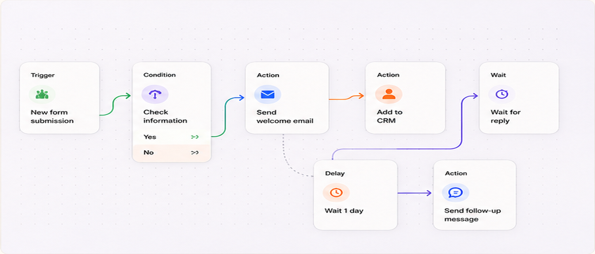
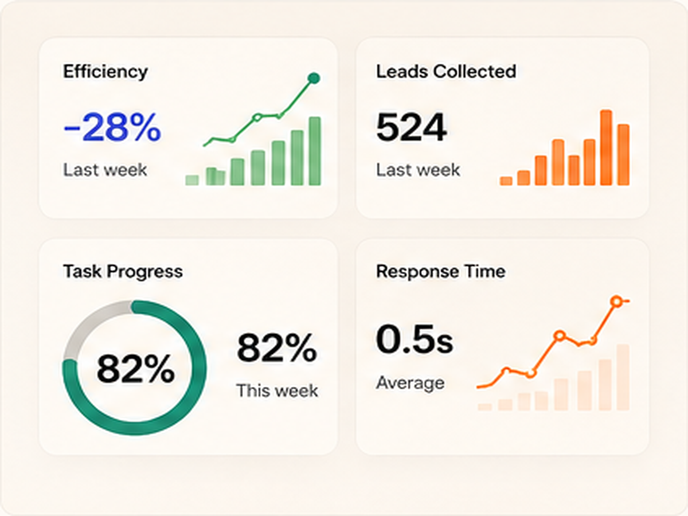
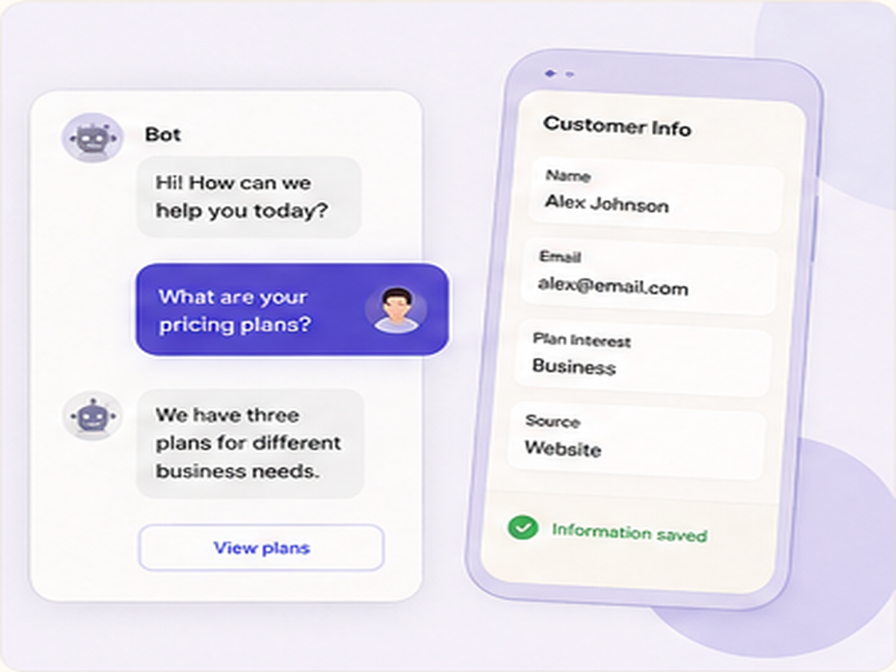
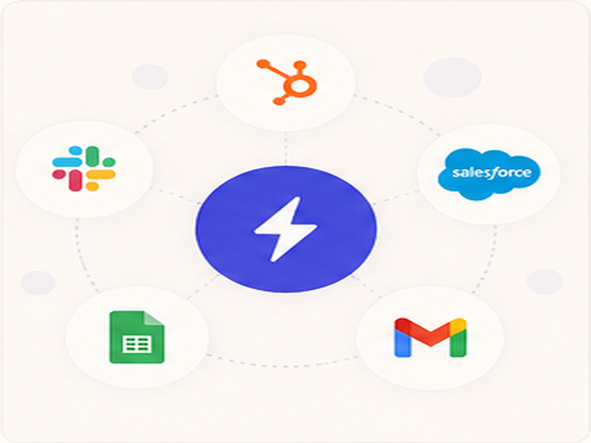
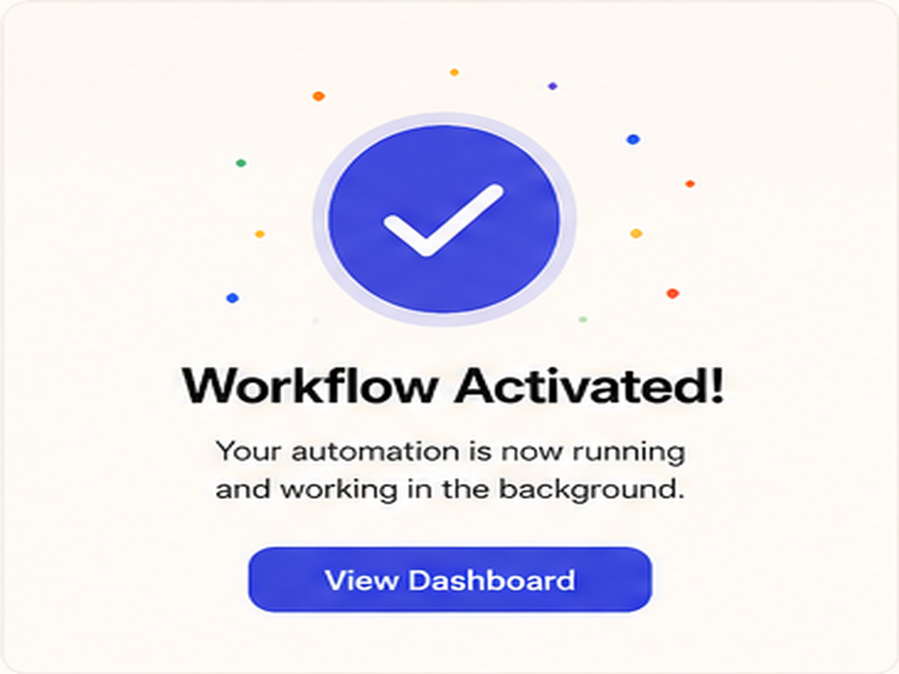

Good automation should feel helpful, not robotic.
Automation is not only about sending faster replies. It is about removing repeated work while still keeping the customer experience clear, friendly, and personal. Tools like Zapier show how small automated actions can connect different parts of a business.
The problem starts when automation replaces the human feeling completely. If every reply sounds the same, the brand can feel cold. Good automation should guide people, collect useful details, and send them to the right next step.

Automation workflow map
Automation analytics stats
Automation chat flowAutomation should remove repeated steps.
The best place to use automation is where the same task happens again and again. Examples include contact forms, lead collection, appointment reminders, project updates, and simple customer questions.
Platforms like HubSpot use automation to organize customer details, follow-ups, and communication. The goal is not to make the system feel complex. The goal is to make the process smoother.
Do not automate the wrong parts.
Some parts of a business should stay human. A serious complaint, a custom project discussion, or a high-value client question usually needs personal attention.
The best automation knows when to stop. It collects the basic information first, then sends the person to the right human or the right next step.
Automate repeated questions
Use automation for FAQs, service details, pricing questions, booking steps, and basic lead collection.
Keep important replies human
If the customer is confused, angry, or asking for something custom, let a real person take over.
Use simple language
Automated messages should sound natural. Avoid long robotic paragraphs and confusing button labels.
Good workflows guide the visitor.
A strong workflow should feel like a clear path. The visitor should always understand what is happening, what information they need to give, and what will happen after they submit it.
Tools like Manychat are useful because they can turn simple conversations into guided steps. But the structure still needs to be planned carefully.

Automation integrations
Automation result screenThe final idea.
Before adding automation, ask: does this make the process faster, clearer, or easier for the visitor? If not, the automation may only create extra confusion.
Great automation does not remove the brand personality. It removes the boring repeated work, so the brand can respond better and focus on the parts that need real attention.